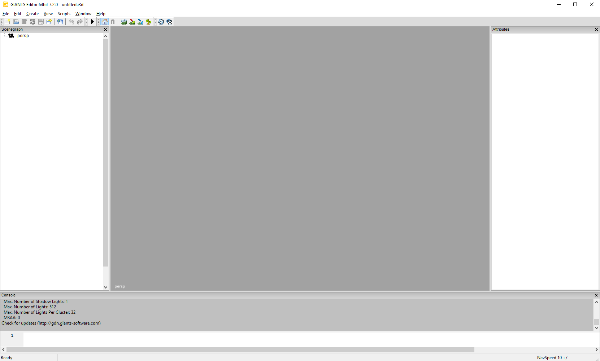
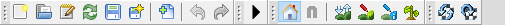

Kaj je Giants editor?
Giants editor je program, ki ga je razvil Giants software (razvijalec igre), z namenom, da bi olajšali obdelovanje map in 3D modelov za igro.
Uporablja se za:
- ustvarjanje in urejanje map,
- pregledovanje 3D modelov raznih predmetov, ki se pojavijo v igri,
Prenos
Najprej moramo obiskati spletno stran Giants software-a (tukaj).
Na spletni strani se moramo najprej registrirati, to lahko storimo na desni v "LOGIN" oknu. Klikniti moramo na "Register here", ki se nahaja malo nižje v tem oknu.
Ko se registriramo dobimo dostop do različnih vsebin, ampak nas najbolj zanima "Downloads" podstran, na kateri lahko najdemo programe in plugin-e, ki nam pridejo prav pri delu z sredstvi, kot so premeti v igri in tisti, ki jih želimo v igro umetiti. Vredno si je ogledati tudi "Videos" in "Documentation" podstrani ("Documentation" podstran je malo povozil čas, amapak je še vedno dokaj primerna za osnovne funkcije).
Na podstrani "Downloads" lahko najdemo precej produktov, katere lahko namestimo.
Izberite najnovejšo verzijo programa Giants editor in prenesite .exe datoteko, s katero boste namestili program. Ko se datoteka prenese, jo zaženite in namestite program. Namestite tudi plug'in "Blender exporter", s pomočjo katerega lahko primerno izvozimo 3D modele iz programa Blender. (v tem prročniku je uporablejn Blender)
Uvod v Giants editor
Najprej si je vredno ogledati elemente iz katerih je sestavlen Giants editor in kaj je možno.

Ko se Giants editor zažene, izgledea takole.
Viewport
V ti. viewport-u lahko vidimo objekt, ki ga urejamo (bodisi mapa, bodisi neko vozilo ali priključek).
Uporabljamo lahko naslednje komade
- alt+LMB: obračanje kamere
- alt+RMB: premik kamere naprej/nazaj
- alt+MMB: premik kamere levo/desno
Orodna vrstica

V orodni vrstici lahko najdemo veliko uporabnih orodij, pri izdelavi mape nam najbolj koristijo orodja za manipulacijo z površjem, kot so orodja za urejanje reliefa, teksture tal, postopkovno postavljanje, urejanje ti. weight map in podobno. Tukaj lahko najdemo tudi ikone, s katerimi lahko odpremo mapo (v kateri se nahaja projekt na katerem delamo) ali uvozimo/izvozimo nek objekt, shranimo naš nepredek, znova naložimo sence (to pride prav če se pojavi kakšna grafična napaka ali "artifacting".